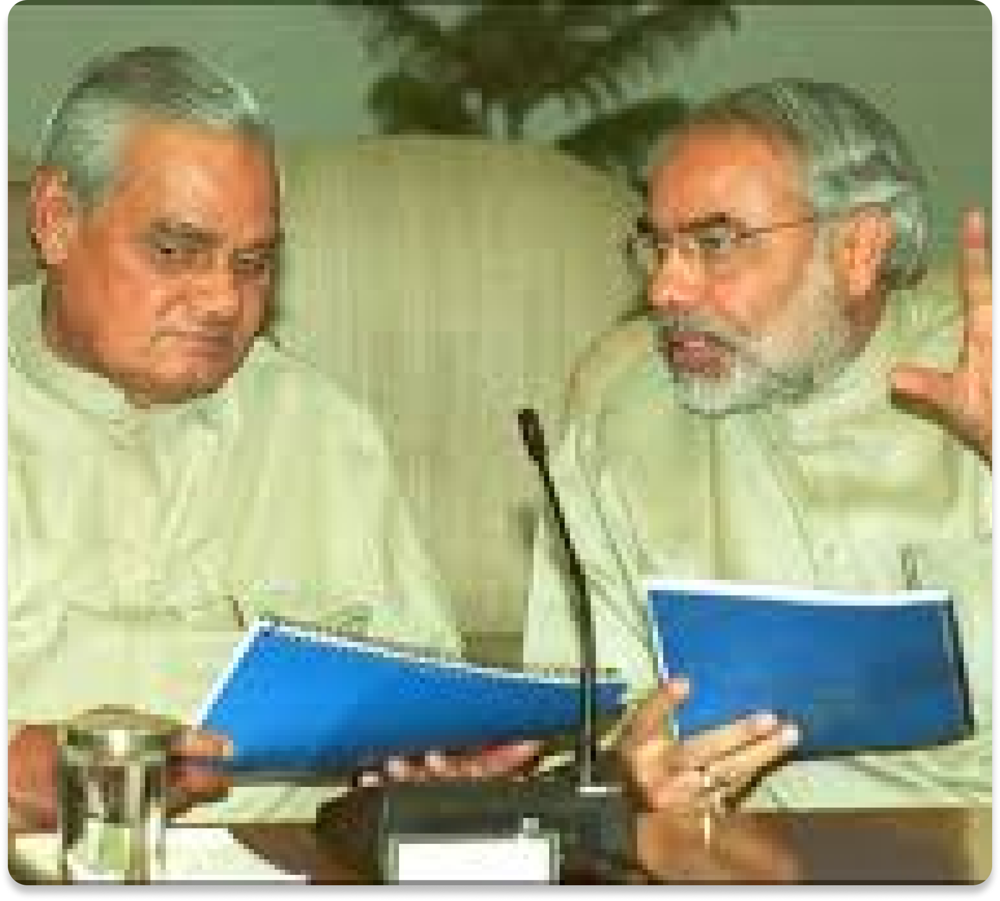
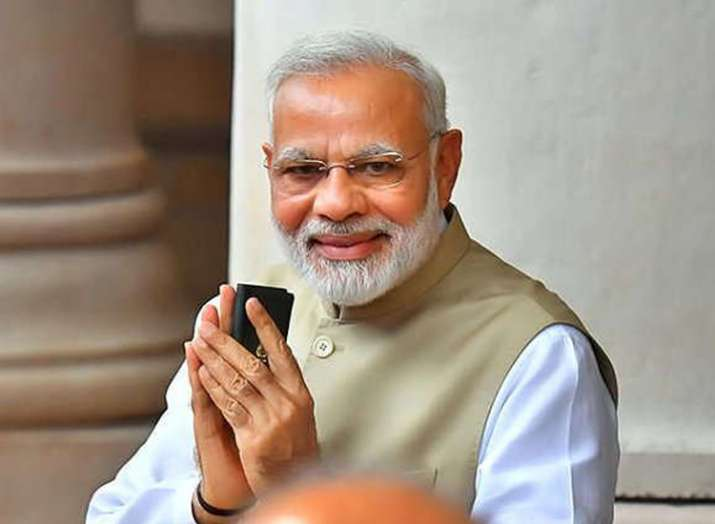
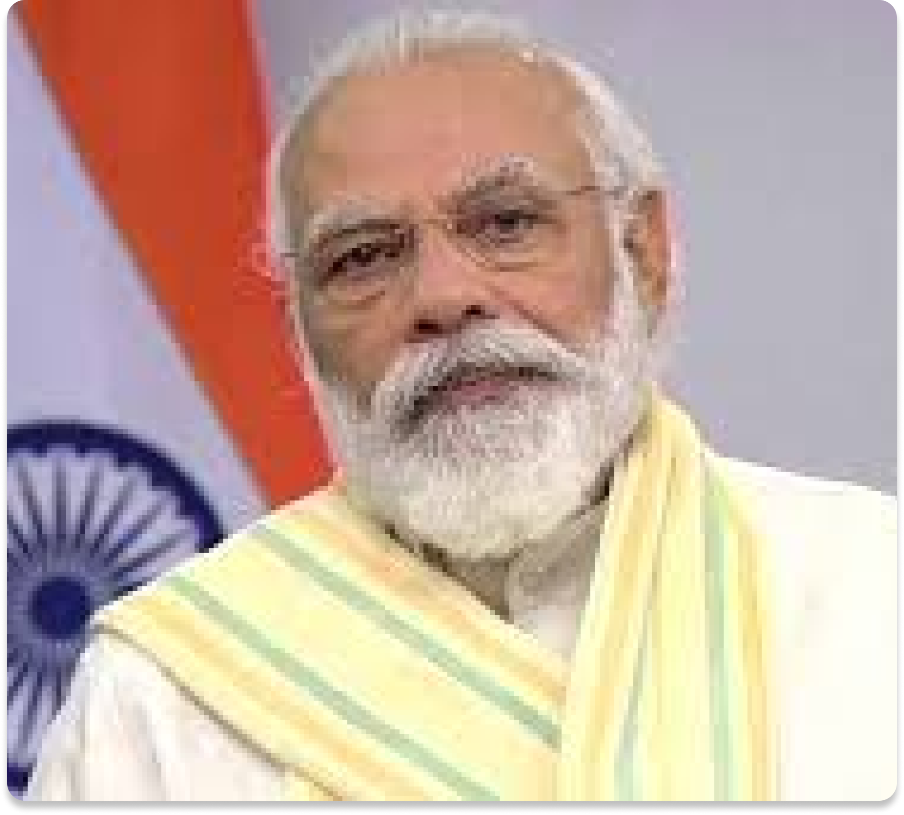

In 1987, he joined the BJP and a year later he was made the general secretary of the Gujarat branch of the party.
In 1995, he was recognised as a key strategist for being instrumental in successfully campaigning for the party.
In 1995, he was appointed as the Secretary of the BJP's national unit.
In 1988 in Gujarat Assembly elections BJP came as the ruling party in Gujarat.
Mainly, two events contributed in bringing the BJP power in 1998 that are the Somnath to Ayodhya Rath Yatra, which was a long match by L.K Advani and another was a march from Kanyakumari to Kashmir under Murli Manohar Joshi.
He was credited for carrying out the responsibility of revamping the organisation of the party in various states.
In 1988, he became the General Secretary and holds the position till 2001.

In October, 2001, he became the Chief Minister of Gujarat when his predecessor Keshubhai Patel resigned from the post due to health reason and also BJP lost few state assembly seats in by-elections. He took the oath on 7 October, 2001 as CM of Gujarat.
On 24 February, 2002, he won a by-election to the Rajkot II constituency. He defeated Ashwin Mehta of INC and this was his first and very short term.
He further contested from Maninagar and won the assembly election by defeating Oza Yatinbhai Narendrakumar of INC. And in the second term, he was retained as a Chief Minister of Gujarat.
His third term of CM was from 23 December, 2007 till 20 December, 2012. This time also he won from Maninagar and defeated Dinsha Patel of INC.
He was again elected from Maninagar and defeated Bhatt Shweta Sanjiv. He took the oath as CM which is his fourth term but later he resigned in 2014 from an assembly.
"Don't dream to be something but rather dream to do something great!” – Narendra Modi

Then, Narendra Modi contested 2014 Lok Sabha elections for the first time. He won the election by a large margin and sworn in as the Prime Minister of India on 26 May, 2014. He became the first Prime Minister of India who born after India's independence from the British Empire.
After becoming the CM of Gujarat in his second term in 2002, he focused on the economic development of the state and makes it an attractive destination for businessmen and industrialists.
In his third term of CM in 2007, he improved the agricultural growth rate, provided electricity to all villages and fortifies the rapid development of the state.
When he was the CM of Gujarat with the support of the government created groundwater conservation projects. This had helped in the cultivation of Bt cotton with the help of irrigation facility via tube wells. Do you know that Gujarat became the largest producer of Bt Cotton?

To every village, electricity is brought in the state of Gujarat under Modi reign. He also changed the system of power distribution in the state by separating agricultural electricity from rural electricity.
In the BJP election campaign of 2009 and also of 2014, he played a crucial role.
Also, he had made successful efforts to invite foreign investments in the state of Gujarat.
Gujarat is the fourth state in the world where we have a separate climate-change department.
After becoming the PM of India he has initiated several ambitious and important projects like "Swachh Bharat Abhiyan", "Make in India", "Clean Ganga" etc.
He also tried to improve bilateral relations with other countries of the world.
He has also shows great interest in strengthening ties with the neighbouring countries.
"Let work itself be the ambition”. – Narendra Modi